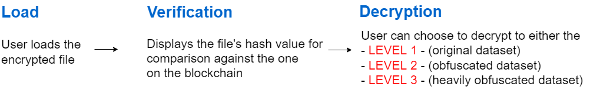

Verification
The Verification tab allows data recipeints to verify and decrypt the encrypted volume (that contains the original and/or obfuscated datasets).This tab permits these tasks:
Decrypt Passphrase
The Decrypt Passphrase option from the Shild Passphrase Tab allows data owners and recipeints to use their private key to decrpt the encrypted passphrase (see Generate Keys button in Figure 5). Data recipients can use their private key to decrypt the encrypted passphrase, that can then be used to decrypt the dataset (see Decrypt Passphrase option in Figure 5). The private key is restricted within QGIS during decryption. Depending on security requirements, recipients can choose to send a new public key for encrypting the passphrase for each encrypted dataset or use the same one for all datasets to be sent to them.

Verification
The verification process involves proving that the encrypted volume is the same as when it was safeguarded. This is achieved by comparing the digital signatures of the encrypted volume: the current one against that stored on the Blockchain. Once they match, the user can be confident that the encrypted volume has not been altered and can proceed to decrypt the volume. These processes are explained below.
First, a hash value of the encrypted volume is generated. This value is then compared with that stored on the Blockchain under the users account. The masked dataset is encrypted in the browser memory at three levels. If both hash values match, it can be assured that the encrypted volume is the same as when it was safeguarded.
Decryption
The Decryption process uses a passphrase to transform the encrypted data into a usable form. Mapsafe uses the encryption-decryption facility provided by the Web.Cryto toolkit whiich is in-built within the browser. This is similar but opposite to the encryption process. The masked dataset is decrypted in the browser memory at three levels. These passphrases are required to decrypt to each of the three levels.
- The full 15 term passphrase is used to decrypt to the original dataset,
- 10 terms of the full passphrase to decrypt the masked dataset, and
- 5 terms of the full passphrase to decrypt the `more' masked dataset.

A detailed description of the encryption and decryption proceses are provided in this
document
How do I use the verification facility?
Watch this GIF to learn how to verify your data, from start to finish!